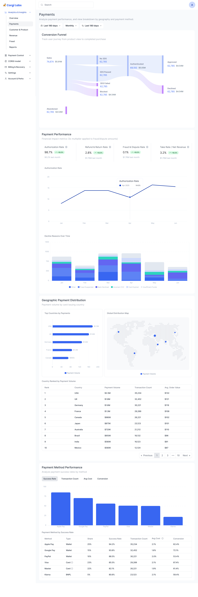
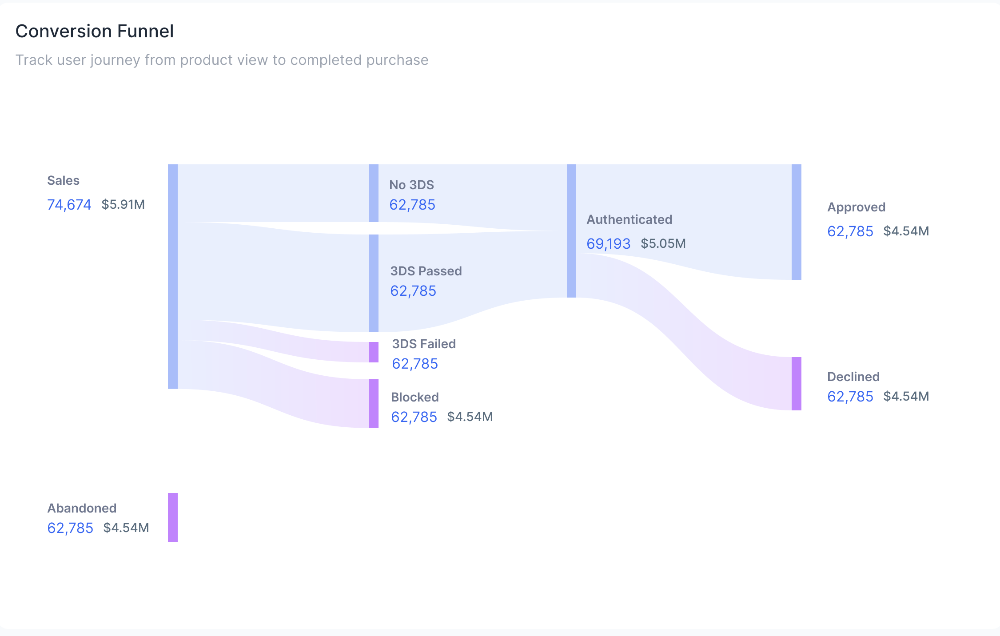
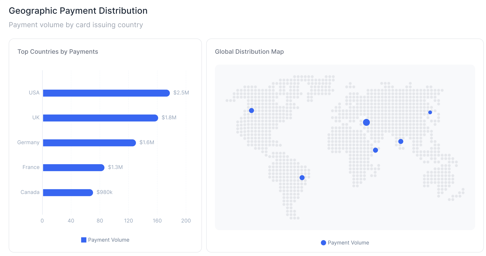
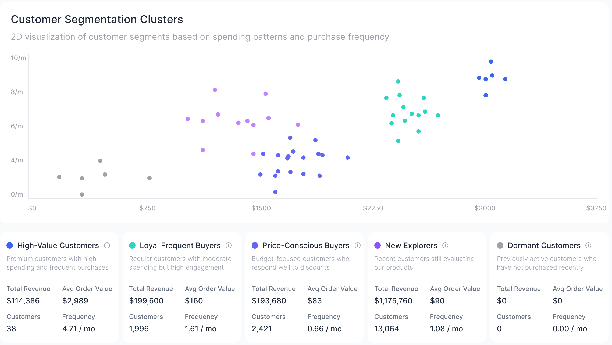
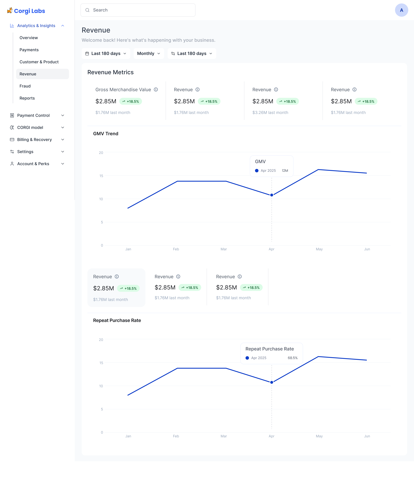
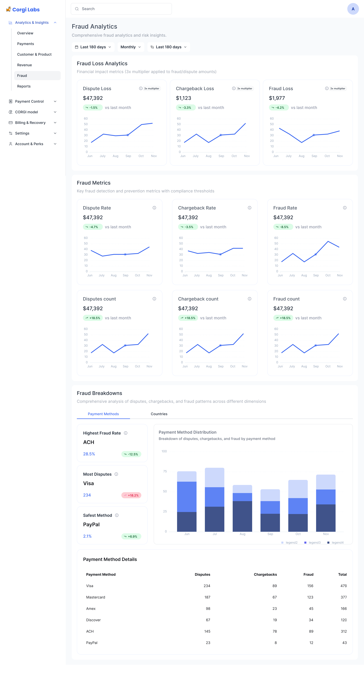
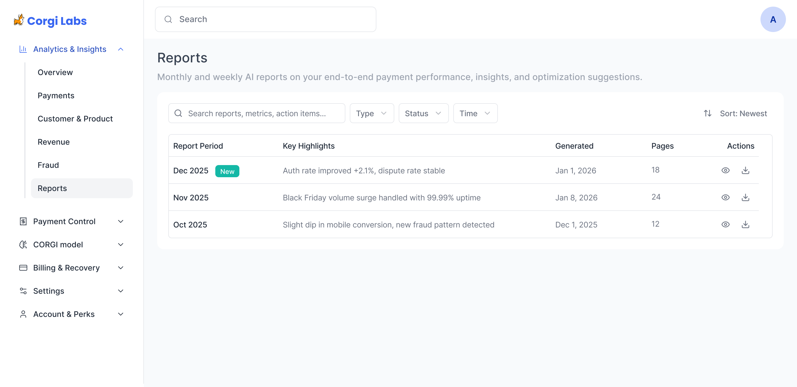

FINTECH AI
Corgi Labs | Fintech AI | Product Design Lead
Designing a Payments Intelligence Platform
I designed a fintech AI experience for Corgi Labs, a payments intelligence platform that helps businesses understand payment performance, reduce fraud exposure, and identify revenue opportunities across different customer and product segments.


The Problem
Payment performance is not one problem. An ecommerce company may care about checkout approval and geographic distribution. A subscription business may care about churn, repeat purchase, and failed renewals. An AI SaaS product may need to separate legitimate growth from fraud risk. Financial institutions often need confidence, thresholds, reporting, and governance.
The existing opportunity was bigger than a dashboard. Corgi Labs needed a product experience that could turn messy payment signals into clear business decisions: where revenue is leaking, why transactions decline, which customer segments matter, and when the AI model is ready to intervene.
Payments were fragmented
Users had to interpret approval, declines, disputes, methods, geography, revenue, and fraud from separate mental models.
AI required trust
The CORGI model needed clear qualification, training, data sync, and readiness states before users would rely on recommendations.
Segments needed different value paths
Different business types had different first moments of value, so the product could not depend on one generic onboarding or dashboard story.
Product Strategy
I reframed the product around a simple promise: higher acceptance, lower fraud, more revenue. The experience needed to help users move from setup to insight to action, while keeping the AI model understandable enough for payment and risk teams.
The resulting structure separated the product into four layers: onboarding and qualification, analytics and insights, CORGI model readiness, and ongoing reporting. This allowed users to understand what the system knows, what it recommends, and what action they should take next.

Onboarding and Qualification
The onboarding flow had to do more than collect account information. It had to communicate whether a business had enough transaction history, fraud examples, and volume to benefit from the model. This helped set the right expectations before users reached the analytics experience.
I designed the setup flow around explicit states: sign up, connect data, choose a plan, qualify the CORGI model, and begin training. This made the AI adoption path feel concrete and reduced ambiguity around why some users could access model training immediately while others needed more data.


Information Architecture
The product needed to support both quick executive scanning and deeper analytical workflows. I organized the main navigation around user intent: overview, payments, customer and product behavior, revenue, fraud, and reports. Secondary areas such as payment control, the CORGI model, billing, settings, and account management were separated from daily analytics.
This structure gave users a predictable map: start with the health of the business, then drill into the exact payment, customer, revenue, or risk dimension behind a change.

Designing for Decision Quality
A senior design challenge in analytics products is choosing what not to show first. The interface had to avoid becoming a wall of charts. I used insight cards, metric groups, tabs, filters, and progressive detail to help users move from signal to diagnosis.
The overview page surfaced the four decision areas most likely to matter in a payments business: revenue growth, fraud protection, optimization opportunity, and system health. Each section then connected to a deeper page where users could inspect the underlying evidence.
1. Lead with business language
Instead of exposing raw payment data first, the overview framed insights around revenue, protection, optimization, and system health.
2. Separate observation from diagnosis
Metric cards answered what changed. Detailed pages answered where it happened, why it happened, and which segment or payment method was affected.
3. Make time and comparison persistent
Global date and frequency controls helped users compare trends consistently across payments, revenue, fraud, and customer behavior.
Payments and Conversion
The payments page needed to expose the path from sale intent to approved payment. I designed the conversion funnel to show where transaction value moved through no-3DS, 3DS passed, authentication, approval, decline, blocked, and abandoned states.
This view was important because approval rate alone can hide the real problem. A decline may be caused by authentication, issuer behavior, fraud rules, payment method mix, or geography. The design helped users locate the loss point before jumping to a solution.


Customer and Product Intelligence
For many businesses, payment performance only becomes actionable when it connects to customer and product behavior. I designed the customer and product section around three analytical modes: customer overview, customer clusters, and product performance.
The cluster view helped users compare high-value customers, loyal frequent buyers, price-conscious buyers, new explorers, and dormant customers. This shifted the product from reporting what happened to helping teams decide where to focus retention, pricing, and optimization effort.


Revenue and Fraud Views
Revenue and fraud needed different interaction patterns. Revenue required trend clarity, repeat purchase signals, and GMV context. Fraud required thresholds, dispute and chargeback metrics, breakdowns by payment method or country, and a table for operational review.
I kept these pages visually consistent while allowing each domain to express the metrics that mattered. This made the product feel coherent without flattening payment, revenue, and risk into the same generic dashboard template.


Reports as a Trust Layer
For a fintech AI product, trust also comes from documentation. I designed reports as a recurring artifact that captured payment performance, AI insights, optimization suggestions, and action items. This gave teams a way to review decisions outside the dashboard and share performance narratives with stakeholders.

Outcome
The final design positioned Corgi Labs as a payments intelligence system rather than a generic analytics dashboard. The experience connected setup, model qualification, business health, payment funnel analysis, customer segmentation, revenue trends, fraud monitoring, and AI-generated reports into one coherent product journey.
The strongest product shift was structural: different business types could enter through different value paths, while the platform maintained one consistent language for insight, diagnosis, and action.
Translated complex payment data into revenue, fraud, optimization, and system-health decisions.
Made model eligibility, data sync, training, and readiness visible before asking users to rely on recommendations.
Created a modular navigation model that can support new payment controls, AI features, and reporting workflows.